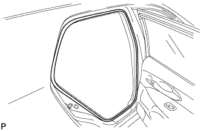
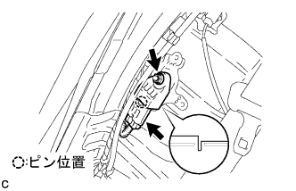

Airbag Sensor Rear RH Removal |
| 1. Handling and Work Precautions |
)| 2. Disconnect Battery Negative Terminal |
)| 3. Remove Rear Seat Headrest Assembly (RH Seat Position) |
| 4. Remove Rear Seat Headrest Assembly Center (RH Seat Position) |
| 5. Remove Rear Seat Cushion Hinge Cover NO.1 (RH Seat Position) |
 |
Disengage the 4 claws and remove the rear seat cushion hinge cover NO.1.
| 6. Remove Rear Seat Cushion Hinge Cover NO.2 (RH Seat Position) |
 |
Disengage the 4 claws and remove the rear seat cushion hinge cover NO.2.
| 7. Remove Rear Seat Assembly RH |
 |
Remove the 2 front side bolts of the rear seat assembly RH.
 |
Fold the rear seat assembly RH forward.
Remove the 2 rear side bolts and remove the rear seat assembly RH.
| 8. Disconnect Rear Seat Outer Belt Assembly Center (Seat Position RH Side) |
 |
Remove the bolt and disconnect the rear seat outer belt assembly center together with the rear seat inner belt assembly.
 |
Remove the washer and rear seat outer belt assembly center from the rear seat inner belt assembly.
| 9. Remove Rear Door Scuff Plate RH |
 |
Disengage the 8 claws and remove the rear door scuff plate RH.
| 10. Remove Rear Door Opening Trim Weatherstrip RH |
 |
Remove the rear door opening trim weatherstrip RH.
| 11. Remove Rear Seatback Hinge Sub-assembly |
 |
Remove the bolt and the rear seatback hinge.
| 12. Remove Rear Seat Side Garnish RH |
 |
Disengage the 6 claws and 2 clips.
Remove the rear seat outer belt assembly RH from the guide and remove the rear seat side garnish RH.
| 13. Remove Airbag Sensor RR RH |
Make sure that the ignition switch is OFF.
Check that the battery negative terminal is disconnected.
 |
Disconnect the connector from the airbag sensor rear RH.
Remove the nut and the airbag sensor rear RH.
| 14. Inspect Airbag Sensor RR RH |
Vehicles not involved in a collision, or vehicles involved in a collision in which the airbag did not deploy
Check the diagnostic trouble codes.
Vehicles involved in a collision
Check the diagnostic trouble codes.
If the C pillar or surrounding area has been damaged and the airbag has not deployed, replace the airbag sensor rear with a new one if any of the following applies.